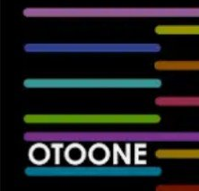
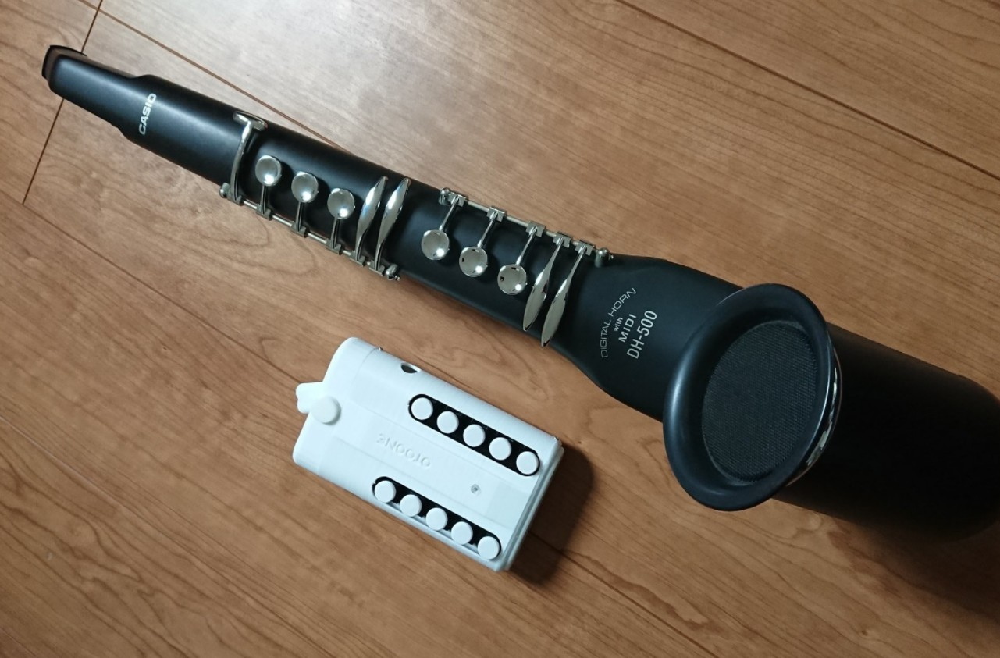

OTOONE_DEV is OTOONE developer
OTOONE の由来は OTO(音) と TONE(音色) を合わせた造語です。
読み方は「オトーン」です。私が子を持つ「お父ん」でもあります…。
Twitter
情報を随時公開予定です。
AFUUE (ウインドシンセサイザー)
超小型のウインドシンセサイザー(電子管楽器)です。
３オクターブ半の広い音域と、息による音の強弱で、感情をこめた演奏表現が可能です。
プロジェクトページはこちらになります。
その成果として
BOOTH 内で工作キットとして販売開始しました！
演奏サンプル
OTOONE_DEV
·
MakerFaireTokyo2020 向けオリジナルデモ曲 / アドリブ演奏 : Jesahm
今までの経緯
右から１号機、２号機、３号機、４号機、５号機、６号機(最新版)です。
2018/02
１号機は、キーが中央の軸を中心に倒れる仕組みです。加工が大変でした。
3Dプリンタも不慣れで本体に隙間があります。Arduino Nano が中に入っています。
2018/05
２号機は、キーが独立し、本体の隙間も改善。こちらも Arduino Nano が入ってます。
完成度が上がりましたが、組み立てはキー１つずつに線材をハンダ付けするので大変でした。
2018/07
３号機は、デザインを管楽器に近づけるテストです。こちらも Arduino Nano が入ってます。
キー１つずつに線材をハンダ付けする大変さは変わらず、本体が複数パーツのため組み立ては最高難度です。
2019/3
４号機は、プリント基板になり、Arduino をやめ AVR マイコンを直に使うようになりました。
組み立ても容易になり、なんとか量産できそうなレベルに達しました。
2020/05
５号機は、ESP32 モジュールと秋月電子さんの AE-8012 アンプを使用することで音質と音量が大幅に改善しました。
５号機の内部基板は１枚です。ここに ESP32 モジュールやスイッチ、気圧センサーなどを実装して、3D プリンターで作った筐体に入れるだけで完成です。
2021/02
６号機は５号機を乾電池で動作するように拡張したバージョンです。
10台くらい量産してみました。
この台数でも筐体印刷、マニュアル作成、動作検証、袋詰めなどかなり大変でした。
その成果として
BOOTH 内で工作キットとして販売開始しました！

カシオ デジタルホーン DH500 とのサイズ比較。超小型です。
ヤマハ WX5 とのサイズ比較。超小型です。
これくらい小型だとカバンに入れて、いつでも持ち歩きできます。
市販のウインドシンセは気軽に持ち運べないですが、AFUUE であれば旅のお供や、散歩、友人宅などで大活躍すること間違いなしです！
OTOONE (Android楽器アプリ)
画面をスクロールする事なく、４オクターブで和音が演奏できる、おそらく唯一の Android アプリです。
タッチしながらスライドする事でポルタメントもできます。
色は各スケールを表しており、D メジャーで演奏したい時は黄色いラインを見ればＯＫの簡単仕様。
GooglePlay
プレイ動画